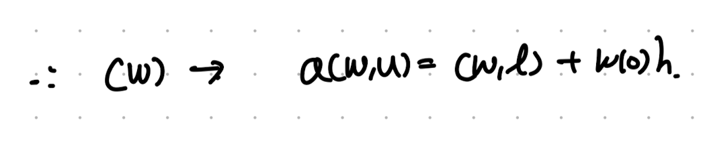
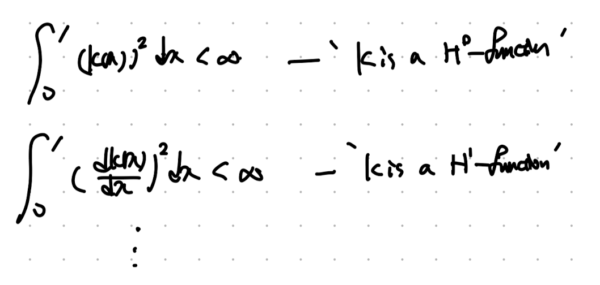
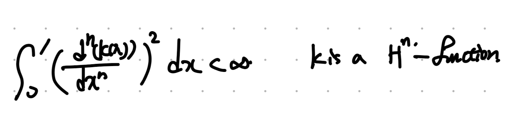

Finite element Method Ch1 strong and weak form.
Computational engineering 에서 가장 중요한 FEM에 대해서
조금씩 천천히 깊이 있게 지금부터 이야기 해보자.
지금 결국에 우리가 하고싶은 것은
PDE 를 풀고싶은데, Boundary value만 가지고 있는 상황이다.
Boundary value + Governing eq(물리법칙 PDE)를 가지고
전체적인 domain의 해를 구하고 싶은게 우리의 목적이다.
감이 오지 않으니 바로 실전으로 들어가보자.
간단하게 1D PDE (1.1.1)을 푸는 문제를 살펴보자.

위 PDE에 주어진 Boundary value를 만족하는 u를 찾는게 우리의 목표다.

위 목표를 수학적 명제로 표현하게 되면 아래와 같고, 편의상 우리는 이 명제를 Strong form이라고 칭하자.

여기서 Finite Elment Method해석을 위해서, Strong form을 weak form으로 전환 해주는게
너무나도 중요한 FEM에서 핵심이다.
변환과정은 위 (S)의 PDE에서 양변에 weight function(w)를 곱해준 후, 부분적분을 진행해준다.
그리고 여기서 모든 어떠한 w를 곱해도 적분식을 만족하는 u를 찾는 것이 새로운 목표이고,
이 명제를 (W) weak form이라 부르자.

위 적분기호들이 굉장히 많이 나오기 때문에, 편의상 밑 기호들로 치환해주자.

따라서, 최종적으로 치환된 Weak form Eq은 다음과 같다.

여기서 잠깐 당연히 아무 w(x)를 곱하면 안될것이다. 일단 첫번째 미분항이 존재하고, 적분 을 해야하니 여러 조건들을 만족해야한다.
그 조건들을 수학자들이 하나의 기호로 표현한 것이 아래의 기호이다.
바로 weight function이 H1 함수공간 안에 속하며, w(1) = 0 이어야 한다는 것이다.

두가지 의문이 들것이다.
Q1. w(1) = 0 ? why?
Q2. what is H1 function space.
먼저 첫번째 의문은 dirichlet boundary condition u(1) = g를 표현하기 위한
구속조건이다. 추후에 다시 살펴보자.
여기서 중요한 H1 function space에 대해서 살펴보자.
일단 위 개념을 장착하기 전에 Square integrable이라는 개념이 먼저 필요하다.

어떠한 함수의 제곱의 적분이 bounded 즉 유한한 함수를 square intergable 이라고 표현하고,
기호로는 L2함수라고 표기한다.
그리고 만약에 미분함수들이 square integrable한 경우는 다르게 표기를 하는데 여기서
등장하는 함수가 H0 , H1 ...함수이다.

쉽게 눈치를 채셨겠지만, n번 미분함 함수가 square intergable하다면, 우리는 그 함수를 Hn function이라고 칭한다.

여기서 마지막으로 한단계만 더 나아가면, 어떠한 함수와 그 함수의 k번 미분한 함수까지 전부다 square integrable하다면,
우리는 그 함수가 Soblev Spaces(H^K)안에 있다고 정의한다.

다시 위 개념들을 장착한 상태에서 weak form의 정의를 다시 살펴보자.

여기서 w함수는 H1함수 이어야 하고, 다시말해 w(x), dw/dx 함수 두가지 모두 square integrable하다는 말이다.

자 이제 마지막으로, strong form 과 weak form이 두개가 동치임을 증명하자.
먼저, (S)의 해이면, (W)의 해임을 증명하면 다음과 같다,

반대로, (W)의 해이면, (S)의 해임을 보이면 다음과 같다.